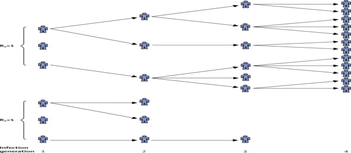
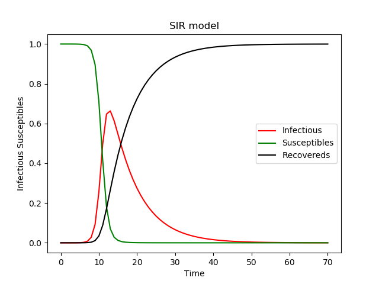
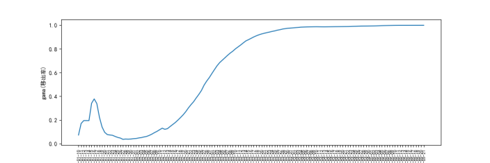
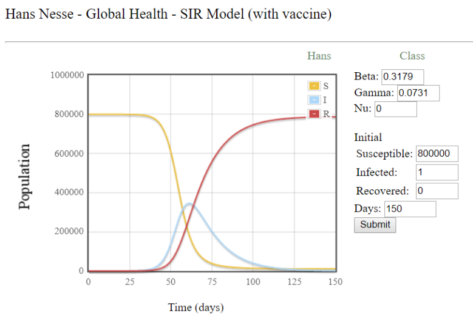

SIR模型简介
采用SIR模型，S代表易感者（Susceptible），指未得病者，但缺乏免疫能力，与感病者接触后容易受到感染，I表示感染者Infective），指染上传染病的人，它可以传播给S类成员，R表示恢复者（移出者，Removal），指被隔离，或因病愈而具有免疫力的人。染病人群为传染源，通过一定几率把传染病传给易感人群，ta自己也有一定的几率被治愈并免疫，或死亡。易感人群一旦感染即成为新的传染源。 模型假设: ①不考虑人口出生、死亡、流动等情况，即人口数量保持常数。 ②一个病人一旦与易感者接触就必然具有一定的传染力。假设 t 时刻单位时间内，一个病人能传染的易感者数目与此环境内易感者总数s(t)成正比，比例系数为β，从而在t时刻单位时间内被所有病人传染的人数为βs(t)i(t)。 ③ t 时刻，单位时间内从染病者中移出的人数与病人数量成正比，比例系数为γ，单位时间内移出者的数量为γi(t)。
模型为：
| β | is the transmission rate and incorporates the encounter rate between susceptible and infectious individuals together with the probability of transmission. |
| γ | is called the removal or recovery rate, though often we are more interested in its reciprocal (1/γ) which determines the average infectious period. |
| S | is the initial proportion of the population that are susceptible. |
| I |
is the initial proportion of the population that are infectious. |
在以上三个基本假设条件下，可知：当易感个体和感染个体充分混合时，感染个体的增长率为 ，易感个体的下降率为 ，恢复个体的增长率为 。易感者从患病到移出的过程可以用微分方程表示如下：
其中，β为感染系数，代表易感人群与传染源接触被感染的概率。γ为隔离(恢复)系数，我们对其倒数1/γ更感兴趣，代表了平均感染时间(average infectious period)。S(0)为初始易感人数，I(0)为初始感染人数。
另外我们需要注意到传染等级取决于β/γ，也就是基本再生数（basic reproduction number，R0=β/γ），当R0>1表示疾病将爆发，<1时则表示疾病将消亡，故R0也作为判断疫情是否要爆发的重要因素。基本再生数的意义表示平均一个感染态感染的人数，该数是会随着时间变化而变化记为R（t），所以在实际疫情控制的过程中当Rt<1时，即表示一个感染者平均传染给小于一个人，我们即可认为疫情正在走向消亡。
所以，根据上图三个等式，我们可以得到关于S、I、R与时间t的关系图，如下图所示：
从图中可见，随着时间的推移传播者刚开始急速上升再缓慢下降。恢复者持续上升趋于稳定，易感染者持续下降趋于稳定。该模型是SIR中最基本模型，此外还有一些考虑出生率、死亡率等因素的模型变种。
所以我们需要找到符合新冠肺炎疫情情况的β值，γ值,通过图像来预测未来疫情趋势
我们通过疫情数据得到
所以通过数据我们可以得到疫情爆发早期的γ
·1月10日至1月19日，该时间段处于疫情爆发伊始，可参考值比较少而且对于疫情是否人传人等特点还不明确。所以移出率处于一个起步状态。
·1月20日至1月28日，该时间段γ迅速下降，在该时间段新增确诊增加较快，但是死亡病例与治愈病例很少所以γ不断下降。
·1月29日之后，之后的时间段里之后虽然新增确诊很多但是早期感染病例也在不断治愈，或者有的早期病例死亡。使移出率快速增加。但是移出
作为对新冠肺炎的预测我们选取最开始阶段的γ值作为预测12月8号的预测，因为前期病例案例比较少且1月10日只有一例死亡两例治愈，所以我们指定γ=0.0731。
在估算感染率时我们我们就要关注之前提到过的基础再生数R0，通过R0与已知的γ就可以得到β
经过终南山说的R0介于2与3之间，考虑到疫情爆发期间无任何防护措施R0往往会高过疫情期间，所以在疫情爆发初期应该是要>3的
另外地，根据美国CDC期刊《新兴传染病》杂志上的一篇题为“High Contagiousness and Rapid Spread of Severe Acute Respiratory Syndrome Coronavirus 2”的文章研究认为认为本次新冠肺炎的R0值达到了从未估计到的5.7。
综合两种不同的观点，且考虑到疫情开始阶段R0比较大，所以我以3与5.7中间数4.35为最终R0。加之γ取0.731，我们可得β=0.3179。
总览中国新冠肺炎的数据，截至到2020/05/21，中国累计确诊82971例，累计密切接触者741344例，我们认为这些确诊与密切接触者处于自由交流状态。又因为后期国内主要新增病例为境外输入病例或境外输入相关病例，我们也可以估计另一组S0即S0为80万人
SIR绘图我们使用亚利桑那州立大学（ASU）Hans Nesse的在线绘制SIR模型（http://www.public.asu.edu/~hnesse/classes/sir.html） 下图为第一组参数图（S0=80万，β=0.3179，γ=0.0731）
我们可以看到如果以12月8日为疫情起始点估计，在40天左右（1月种下旬）开始爆发，在60天左右（二月中旬）达到峰值，峰值达到30万，110天左右（三月中旬）结束疫情。
通过比较我们发现美国新冠肺炎疫情仍在发展过程之中且不乐观